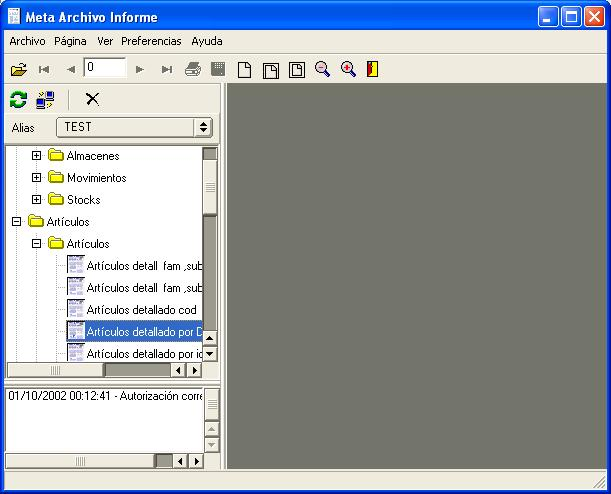
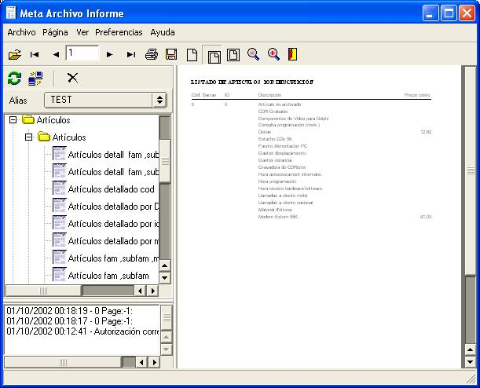

The report client application is metaview, with metaview you can connect to a machine running Report Manager Server. You connect providing hostname, user name and password. By default a report server has only Admin user with blank password.
You can also execute reports with the VCL component and the standard library.
Note: The screenshots are in spanish
After connection, the report server provides a list of available aliases, each alias can have a diferent set of avaliable reports, the reports are represented in a tree structure. Here is a sample of a generated tree.

You can modify the parameters before executing:

When you execute the report, the server sends the result to the client application, then you can print it, save as a report metafile or as a Adobe PDF file.

To distribute the report client you need only this files
| Windows | Linux |
| metaviewxp.exe | metaview, metaview.sh, libborqtint.6.9.so |
| reportmanres.*, metaviewxp.* (Optional) |
reportmanres.* (Optional) |
Internationalization files (reportmanres.*,metaviewxp.*) are optional, the default language is English.
See also Report Server configuration.